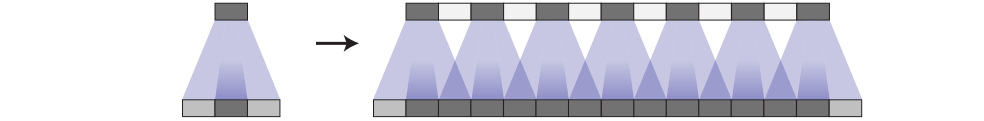
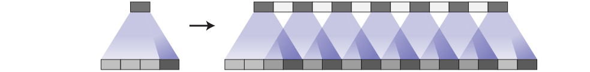
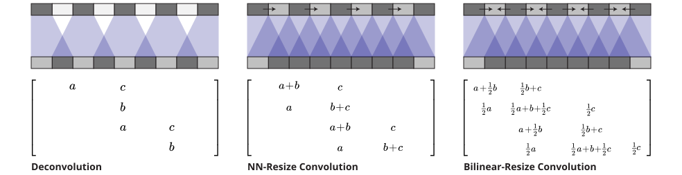
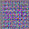
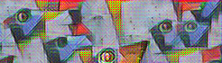
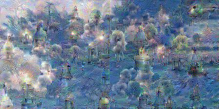
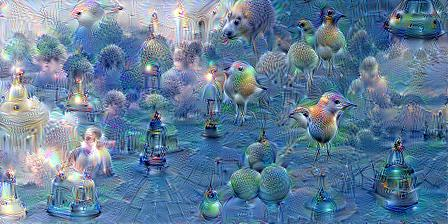
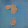

反卷积与棋盘格伪影
Augustus Odena
Google Brain
Vincent Dumoulin
Université de Montréal
Chris Olah
Google Brain
10 月 17 日
2016
引用：
Odena 等，2016
当我们非常仔细地观察神经网络生成的图像时，经常会看到一种奇怪的棋盘格伪影模式。这种现象有的明显有的隐蔽，但最近大量模型都表现出这一行为。

令人费解的是，棋盘格模式在颜色鲜艳的图像中往往最为突出。这到底是怎么回事？难道神经网络讨厌明亮的颜色吗？实际上，这些伪影的成因非常简单，对应的避免方法也同样直观。
反卷积与重叠
当神经网络生成图像时，我们通常让它们从低分辨率、高层次的描述开始逐步构建。这样网络可以先勾勒出图像的大致结构，再逐步填充细节。
为此，我们需要一种能将低分辨率图像提升至更高分辨率的方法。通常采用反卷积操作。大致来说，反卷积层允许模型利用小图像中的每一个点，在大图像中“涂抹”出一个方块区域。
（反卷积有多种解释和不同名称，包括“转置卷积”。本文为简洁起见统一使用“反卷积”这一名称。关于反卷积的精彩讨论可参见 [5, 6]。）
不幸的是，反卷积很容易产生“不均匀重叠”，导致某些位置比其他位置获得更多“颜料”[7]。具体而言，当核尺寸（输出窗口大小）不能被步长（顶层点之间的间隔）整除时，反卷积就会出现不均匀重叠。虽然理论上网络可以通过精心学习权重来避免这种情况——我们稍后会详细讨论——但实践中神经网络很难完全消除它。
这种重叠模式也会在二维空间中出现。两个轴上的不均匀重叠相互乘积，形成具有不同幅度的典型棋盘格状模式。
事实上，在二维情况下不均匀重叠往往更加严重！由于两种模式相乘，不均匀性会被平方。例如，在一维中，步长为 2、尺寸为 3 的反卷积会使某些输出对应的输入数量是其他输出的两倍；而到了二维，这一差异会变成四倍。
如今，神经网络在生成图像时通常会堆叠多层反卷积，迭代地将一系列低分辨率描述逐步放大成更大图像。虽然这些堆叠的反卷积理论上可以相互抵消伪影，但它们往往会相互叠加，在多种尺度上产生伪影。
步长为 1 的反卷积——我们经常在成功模型的最后一层看到（例如 [2]）——能够非常有效地抑制伪影。它可以消除那些频率能被其尺寸整除的伪影，并减弱频率小于其尺寸的其他伪影。然而，伪影仍然可能渗漏，这在许多近期模型中都能看到。
除了上面观察到的高频棋盘格状伪影外，早期的反卷积还会产生较低频率的伪影，我们稍后会更详细地探讨。
这些伪影在输出不寻常颜色时往往最为明显。由于神经网络层通常带有偏置（一个学习得到的加到输出上的值），输出平均颜色非常容易。而颜色（如鲜红色）离平均颜色越远，反卷积就需要贡献得越多。
重叠与学习
用不均匀重叠来思考问题虽然是一个有用的框架，但也有些过于简化。无论好坏，我们的模型都会为反卷积学习权重。
理论上，模型可以学会小心地向不均匀重叠的位置写入，使得输出保持均匀平衡。

这是一个很难实现的平衡操作，尤其当存在多个通道相互作用时。避免伪影会显著限制可能的滤波器，牺牲模型容量。在实践中，神经网络很难学会完全避免这些模式。
事实上，不仅具有不均匀重叠的模型没有学会避免这个问题，即使是具有均匀重叠的模型也常常会学到导致类似伪影的核！虽然这不是它们像不均匀重叠那样的默认行为，但均匀重叠的反卷积仍然非常容易产生伪影。

完全避免伪影仍然是对滤波器的一项重大限制，实践中这些模型中伪影依然存在，只是似乎没那么严重。（参见 [4]，它使用了步长 2、尺寸 4 的反卷积，作为一个例子。）
这里可能有很多因素在起作用。例如，在生成对抗网络（GANs）的情况下，一个问题可能是判别器及其梯度（我们稍后会再讨论）。但问题的一个重要部分似乎就是反卷积。最好的情况是，反卷积很脆弱，因为即使尺寸选择得当，它也很容易表示出会产生伪影的函数。最坏的情况是，产生伪影是反卷积的默认行为。
是否存在另一种更能抵抗伪影的上采样方式？
更好的上采样方法
为了避免这些伪影，我们需要一种替代常规反卷积（“转置卷积”）的方法。与反卷积不同，这种上采样方式不应该以产生伪影作为默认行为。理想情况下，它还能更进一步，对这类伪影产生抑制作用。
一种方法是确保使用的核尺寸能被步长整除，从而避免重叠问题。这等价于“子像素卷积”，这项技术最近在图像超分辨率任务中取得了成功 [8]。然而，尽管这种方法有所帮助，反卷积仍然很容易陷入产生伪影的境地。
另一种方法是将上采样到更高分辨率与计算特征的卷积分离开来。例如，你可以先对图像进行缩放（使用nearest-neighbor interpolation 或 bilinear interpolation），然后再进行卷积层。这看起来是一种自然的方法，在图像超分辨率领域类似的方法也表现良好（例如 [9]）。

反卷积和不同的“缩放后再卷积”方法都是线性操作，可以看作矩阵。这是一种很有帮助的方式，能看出它们之间的差异。反卷积在每个输出窗口都有唯一的条目，而缩放后再卷积则隐式地进行了权重绑定，从而抑制高频伪影。
我们使用最近邻插值取得了最好的效果，而双线性缩放则较难奏效。这可能仅仅意味着，对于我们的模型而言，最近邻插值与为反卷积优化的超参数恰好配合得很好。也可能暗示了朴素使用双线性插值时存在更棘手的问题——它对高频图像特征的抑制过于强烈。我们并不认为这两种方法就是上采样的最终解决方案，但它们确实能消除棋盘格伪影。
代码实现
在 TensorFlow 中可以使用 tf.image.resize_images() 轻松实现缩放后再卷积的层。为了获得最佳效果，在使用 tf.nn.conv2d() 进行卷积之前，应先用 tf.pad() 进行填充，以避免边界伪影。
图像生成结果
我们的经验是，先进行最近邻缩放再接卷积的方法在各种场景下都表现得非常好。
我们发现这种方法特别有帮助的一个领域是生成对抗网络。只要把标准的反卷积层替换为最近邻缩放后再卷积，不同频率的伪影就会消失。
事实上，伪影的差异在训练开始之前就能看出来。如果我们观察生成器在随机权重初始化下产生的图像，已经能看到这些伪影：

这表明这些伪影是由这种图像生成方式导致的，而非对抗训练本身。（这也暗示我们可以在不经过漫长的模型训练反馈循环的情况下，从生成器设计中学到很多东西。）
另一个证明这些伪影并非 GAN 特有的理由是，我们在其他类型的模型中也看到了它们，并且当切换到缩放-卷积上采样后，它们也会消失。例如，考虑实时艺术风格迁移 [10]，其中神经网络被训练直接生成风格迁移后的图像。我们发现这类模型很容易出现棋盘格伪影（尤其是当损失函数没有明确抵抗它们时）。然而，将反卷积层换成缩放-卷积层后，伪影就消失了。

Google Brain 团队即将发表的论文将在更全面的实验和最先进的结果中展示这项技术的优势。（我们选择将这项技术单独介绍，是因为我们认为它值得更详细的讨论，而且它横跨多篇论文。）
梯度中的伪影
每当我们计算卷积层的梯度时，都会在反向传播中使用反卷积（转置卷积）。这会导致梯度中出现棋盘格模式，就像我们用反卷积生成图像时一样。
图像模型梯度中存在高频“噪声”这一现象，在特征可视化领域早已为人所知，并且是一个重大挑战。特征可视化方法必须以某种方式补偿这种噪声。
例如，DeepDream [11] 似乎通过多种方式造成了伪影之间的破坏性干扰，比如同时优化多个特征，以及在多个偏移和尺度上进行优化。其中，“抖动”（在不同偏移上优化）就抵消了一部分棋盘格伪影。


（虽然其中一些伪影是我们常见的棋盘格模式，但另一些则是组织性较差的高频模式。我们认为这些是由最大池化引起的。最大池化此前已在 [12] 中被指出与高频伪影有关。）
最近的特征可视化工作（例如 [13]）已经明确认识并补偿了这些高频梯度分量。人们不禁要问，是否更好的神经网络架构能让这些努力变得不再必要。
这些梯度伪影是否会影响 GANs 呢？如果梯度伪影能影响基于神经网络梯度优化的图像（像特征可视化中那样），那么我们也可以预期，在 GANs 中由判别器优化的、由生成器参数化的图像家族也会受到影响。
我们发现这种情况确实会在某些情况下发生。当生成器对棋盘格模式既没有偏好也没有抑制时，判别器中的步长卷积就会导致这些伪影。

这些梯度伪影的更广泛影响目前尚不清楚。一种理解方式是，某些神经元会莫名其妙地获得其相邻神经元许多倍的梯度。等价地说，网络会毫无理由地对输入中的某些像素比其他像素更加关注。这两者听起来都不理想。
让某些像素比其他像素对网络输出产生大得多的影响，这有可能放大对抗样本。因为导数集中在少数像素上，对这些像素的小扰动就可能产生过大的效果。我们尚未对此进行深入研究。
结论
用反卷积生成图像的标准方法——尽管它取得了诸多成功！——存在一些概念上简单的缺陷，导致生成的图像出现伪影。使用一种不包含这些问题的自然替代方案，能让伪影消失。（类似的论证表明，标准的步长卷积层可能也存在问题。）
这对我们来说是一个令人兴奋的机会！它表明，即使在那些我们似乎已经有了干净工作方案的神经网络架构中，通过仔细思考仍然能发现触手可及的果实。
与此同时，我们提供了一个易于使用的解决方案，它能提升许多用神经网络生成图像的方法的质量。我们期待看到大家用它做出什么成果，也期待它能否在音频等领域发挥作用——在这些领域中高频伪影会特别成问题。